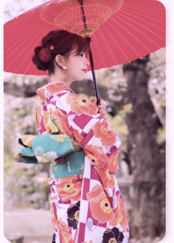

🎐 清新物語．夢幻藍調
這是一款充滿夢幻色彩的清新物語和服，為您的京都之旅注入一抹寧靜的藍調。 柔和的藍色調搭配細膩的日式花卉圖案，營造出溫柔且富有層次感的氛圍，極度適合追求清新、不落俗套風格的您。
🌊 元氣向陽．湛藍之夏
這是一款充滿陽光活力與海洋氣息的夏日浴衣，專為熱愛戶外與自然風光的您設計。
明亮的橘黃色與向日葵圖案，搭配清新的白底，如同海邊的陽光般熱情洋溢。輕薄透氣的材質，讓您在海邊或夏季戶外活動時，保持舒適涼爽。

🦋 暗夜花蝶．魅惑風華
這是一款充滿神秘與魅惑氣息的華麗和服，展現獨特而高雅的日式風華。
以深邃的黑色為基底，搭配鮮豔的紅色花朵與蝴蝶圖案，在沉穩中流露出不羈的華麗。精緻的圖案細節，如同暗夜中綻放的藝術，充滿視覺衝擊力。


🍁 赤紅流雲．古典意境
這是一款充滿古典繪卷意境的華麗和服。 和服上鮮明的赤紅與橙色圖案，搭配細膩的白花邊緣，彷彿將京都古都的秋日紅葉或夏日花火濃縮在布料之上，讓您的寫真充滿濃郁的東方古典韻味。